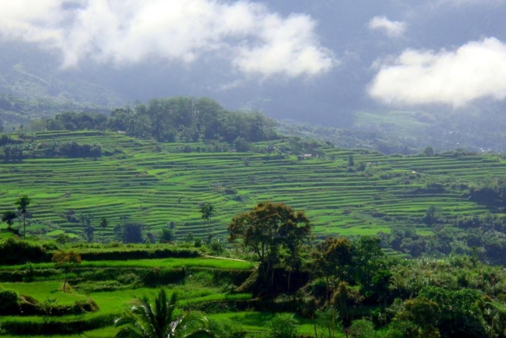

The rice terraces in Apatan represents the beauty and grandeur of the fields carved by hand from the mountain sides by the Natonin Igorots.
The lake is surrounded by dense forests and tranquil landscapes, making it an ideal location for nature lovers, trekkers, and those seeking solitude away from urban areas.
This majestic waterfall is surrounded by lush vegetation and offers a serene and tranquil atmosphere, making it ideal for nature lovers seeking adventure or relaxation.
One of the famous spot in Natonin. If you were on the peak, you can view the 3 barangays namely; Poblacion, Butac and Balangao and the panoramic view of the Apatan rice terraces.
Sakaraw, one of Mountain Province's premier hiking destinations, is a place of enchanting beauty and serenity.a mesmerizing panoramic view of the Cordillera mountain range, with rolling hills, terraced fields, and a patchwork of lush greens.
The longest or grandest rice terraces in the Philippines are not found in Banaue or Batad, Ifugao. They are in a remote municipality called Natonin.
These terraces showcase the harmony between nature and local practices, with cascading fields carved into the mountainside to maximize arable land in the rugged terrain.